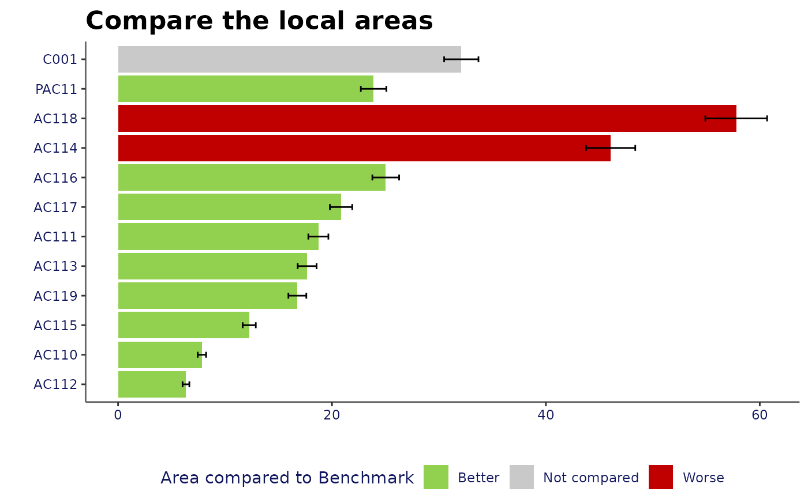

Returns ggplot of compare areas chart
Usage
compare_areas(
data,
area,
value,
lowerci,
upperci,
fill,
order = "desc",
top_areas,
title = "",
xlab = "",
ylab = "",
legend.position = "bottom",
display.values = FALSE,
dps = 1
)Arguments
- data
data.frame or tibble which will be fed into ggplot functions. This object should contain the fields used for the arguments within this function
- area
unquoted field name for the field containing the area variable which will be plotted on y axis
- value
unquoted field name for the field containing the value variable which will be plotted on x axis
- lowerci
unquoted field name for the field containing the variable to be plotted as lower confidence interval (optional)
- upperci
unquoted field name for the field containing the variable to be plotted as upper confidence interval (optional)
- fill
unquoted field name for the field to be used to determine the colouring of the bars; usually reflecting significance. The values that values that can be used in this field with predetermined colours are: 'Better', 'Higher', 'Similar', 'Lower', 'Worse', 'Not compared', 'None'
- order
one of "alphabetical", "asc" or "desc" - to determine how to order the bars
- top_areas
character vector; the areas to fix at the top of the chart. These values must exist within the area field of the data provided
- title
string; title of chart
- xlab
string; x-axis title
- ylab
string; y-axis title
- legend.position
string; the position of legend ("none", "left", "right", "bottom", "top", or two-element numeric vector)
- display.values
logical; whether or not to display the rounded values next to the bars on the chart
- dps
number; number of decimal places to be displayed when display.values = TRUE. The default is 1.
See also
Other quick charts:
box_plots(),
compare_indicators(),
map(),
overview(),
population(),
trends()
Examples
library(dplyr)
df <- create_test_data()
parent <- "PAC11"
top_names <- c("C001", parent)
ordered_levels <- c("Better",
"Similar",
"Worse",
"Not compared")
df_ca <- df %>%
filter(IndicatorName == "Indicator 3",
(AreaCode %in% top_names |
ParentAreaCode == parent))
p <- compare_areas(df_ca, AreaCode, Value,
fill = Significance,
lowerci = LCI,
upperci = UCI,
order = "desc",
top_areas = top_names,
title = "Compare the local areas")
p
